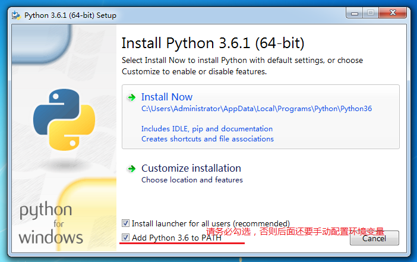
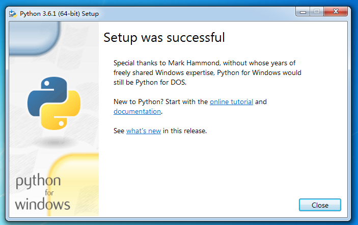
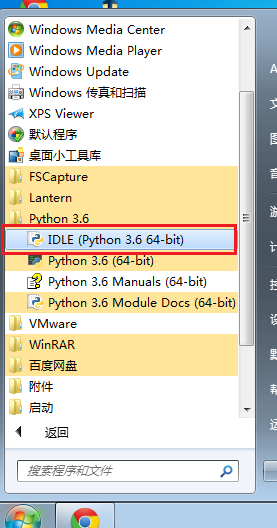

Windows 安装 Python 3
目前Python有两个大版本，分别是 2.X 和 3.X ，我们的教程基于最新版本 3.6.1 首先我们需要获取Python的安装包，可以从官网获取，如果你因为没有VPN工具而无法访问官网的话，我已经将它放在网盘了，永久有效。
你可以根据电脑的操作系统来选择相应的版本。

双击安装，请务必将下面的add python 3.6 to path 选中。

安装成功后直接close即可

好了，到这里就已经安装成功啦
你可以通过 开始 -> 所有程序 -> python 3.6 -> IDLE 打开程序自带的命令行工具

程序自带的命令行界面
或者，你也可以通过 win+R 打开运行窗口， 输入 cmd 回车打开命令行界面，然后输入python命令 回车，也可进入python的交互模式
如果你还是忘记了勾选添加环境变量的话，请手动配置环境变量
把安装的Python程序的路径粘贴，复制到
我的电脑->属性->高级系统设置->环境变量->Path选项
如果需要，分隔符使用英文的分号(;)即可
Python版本检测
1. 在命令行界面输入 python 命令，如果安装成功，则可以进入Python交互界面，第一行即可看到版本信息。
DragondeMacBook-Air:~ dragon$ python3
Python 3.6.1 (default, Apr 4 2017, 09:40:21)
[GCC 4.2.1 Compatible Apple LLVM 8.1.0 (clang-802.0.38)] on darwin
Type "help", "copyright", "credits" or "license" for more information.
>>>
2. 在命令行界面输入 python -V即可，无需进入交互界面即可查看版本信息。
DragondeMacBook-Air:~ dragon$ python3 -V
Python 3.6.1
3. 在Windows的开始菜单，打开Python的IDLE，也可以查看到版本信息。（IDLE是Python软件包自带的一个集成开发环境，初学者可以利用它方便的创建、运行、测试和调试Python程序）
Python 3.6.1 (v3.6.1:69c0db5, Mar 21 2017, 17:54:52) [MSC v.1900 32 bit (Intel)] on win32
Type "copyright", "credits" or "license()" for more information.
>>>
练习
Python目前有几个主流的版本？
如何检测当前环境中Python的版本？